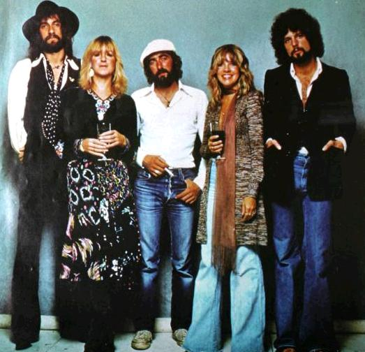

ABOUT

Fleetwood Mac are a British-American rock band, formed in London in 1967. The band have sold more than 100 million records worldwide, making them one of the world's best-selling bands. In 1998, selected members of Fleetwood Mac were inducted into the Rock and Roll Hall of Fame, and received the Brit Award for Outstanding Contribution to Music.[5]
Fleetwood Mac were founded by guitarist Peter Green, drummer Mick Fleetwood and guitarist Jeremy Spencer. They lacked a permanent bass guitarist for the first few months before Green convinced John McVie to join, establishing the first stable line-up in time to record their self-titled debut album. Danny Kirwan joined as a third guitarist in 1969, and keyboardist Christine Perfect, who was used as a session musician starting with the second album, later married John McVie and joined the band in 1970. During this time period, the band was primarily a British blues outfit, scoring a UK number one with "Albatross";[6] and had lesser hits with the singles "Oh Well" and "Black Magic Woman". Personal problems led to original guitarists Green and Spencer leaving in short order, replaced by Bob Welch and Bob Weston.
In late 1974, while the band was scouting studios in Los Angeles, they were introduced to folk-rock duo Lindsey Buckingham and Stevie Nicks. The band sought to add Buckingham as their new lead guitarist, who agreed under the condition that Nicks, his singing partner and girlfriend at the time, also would join the band. The addition of Buckingham and Nicks caused the band to take on a more pop rock sound, with their 1975 album Fleetwood Mac becoming their best selling record to date, reaching No. 1 in the US. Rumours (1977), Fleetwood Mac's second album after the incorporation of Buckingham and Nicks, produced four US Top 10 singles and remained at No. 1 on the American albums chart for 31 weeks, as well as reaching the top spot in various countries around the world. The album has sold over 40 million copies worldwide, making it the eighth-highest-selling album to date. During the recording of Rumours, the band went through personal turmoil, as both of the romantic partnerships in the band (John and Christine McVie and Buckingam and Nicks) separated, though the band kept making music together.
The lineup remained stable through three more studio albums, but by the late 1980s the band began to disintegrate. First to leave was Buckingham, followed by Nicks in 1991, to be replaced by a series of short-term guitarists and vocalists. In 1993, a one-off performance for the Presidential Inauguration of Bill Clinton featured the five key members back together for the first time in six years, and by 1997, a full reunion occurred. In 1998, Christine McVie retired from touring, and the band stayed together as a four-piece with John McVie, Mick Fleetwood, Lindsey Buckingham, and Stevie Nicks. In 2014, Christine McVie rejoined again full time. The latest studio album by the band was 2003's Say You Will, though a side project known as Lindsey Buckingham/Christine McVie was released in 2017 containing contributions from the other band